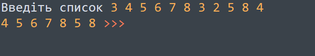

Тема 6.
Списки
Теорія
Завдання
Завдання №1
Виведіть усі елементи списку з парними індексами (тобто A[0], A[2], A[4], …).
Завдання №2
Виведіть усі парні елементи списку. При цьому використовуйте цикл for, який перебирає елементи списку, а не їх індекси!
Завдання №3
Наведено список чисел. Виведіть всі елементи списку, які більші за попередній елемент.
